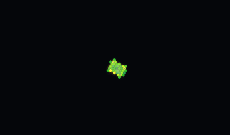
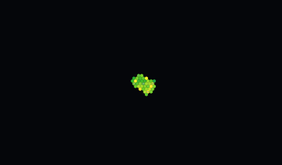
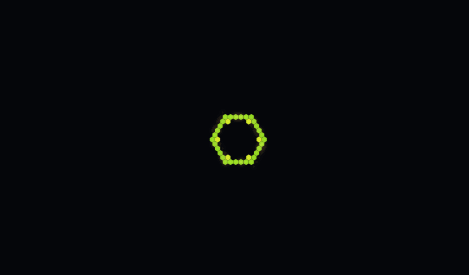
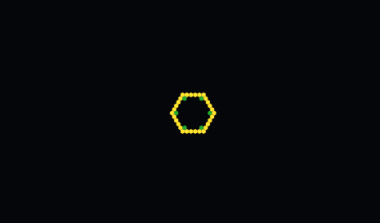
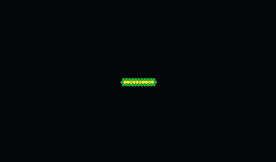
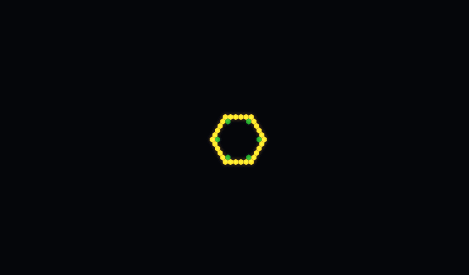
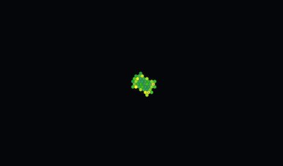
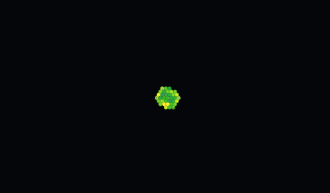

Pick a field by seeing it. Generated once from favorites + the preset list — re-run node scripts/generate-library.mjs after a new favorite, preset, or GIF. Click enters Watch on the workbench (same field, no remount when you Steer).







